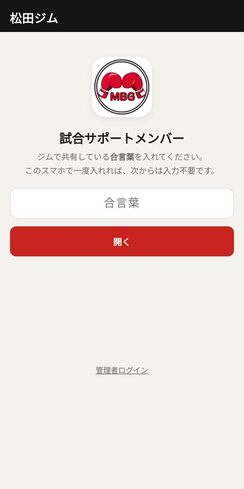
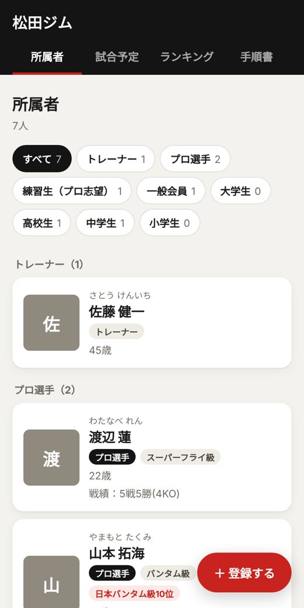
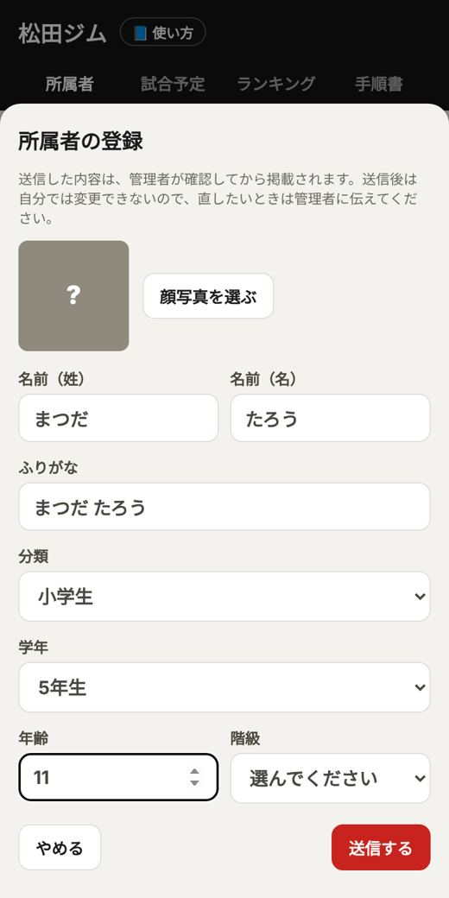

おうちの人やコーチから送られてきたリンクをおします。
赤いグローブのマークがでたら、ジムで聞いた「合言葉」を入れて 開く をおします。
合言葉がわからないときは、コーチに聞いてね。

画面の右下にある、赤いボタン ＋ 登録する をおします。


ぜんぶ入れたら 送信する をおします。「送信しました」とでたら、おしまい！
ジムの人がたしかめたら、「所属者」のページに自分の名前と写真がでます。
送ったあとに名前をまちがえたことに気づいたら、自分では直せないので、コーチに伝えてね。
iPhoneは「Safari」で開いて、下の共有ボタン（□に↑のマーク）→「ホーム画面に追加」→「追加」。
Androidは「Chrome」で開いて、右上の「︙」→「ホーム画面に追加」。
グローブのアイコンができて、つぎからすぐ開けるよ。